国・地域の見分け方
- ドメインは.pl
- 反射板が赤色のボラードがある
- 電柱の一番下に穴が空いていないことが多い
- ポーランドの横断歩道標識は特徴的で線が横に1本(by niwaisound )
- ポーランドのガードレールは角ばっている
- 「Ł・ł」の文字はポーランド以外ではほとんど見られない
- オレンジ色の警告看板があり外枠の赤線がとても細い(参考文献 Warning signs around the world)
- Ulicaはスロバキア・スロベニア・セルビア・ポーランドで通りの意味
- 標識で使われるDrogowskazというフォントが特徴的
見つかる標識
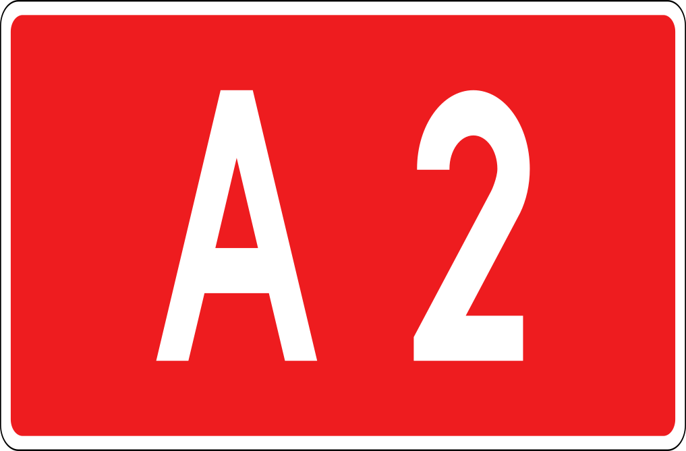

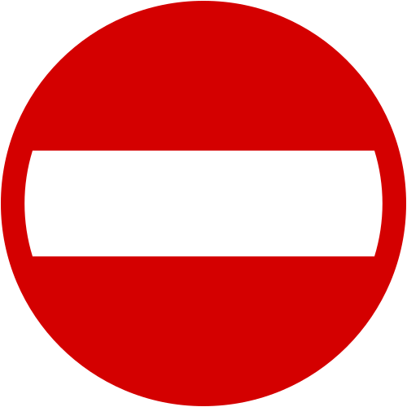
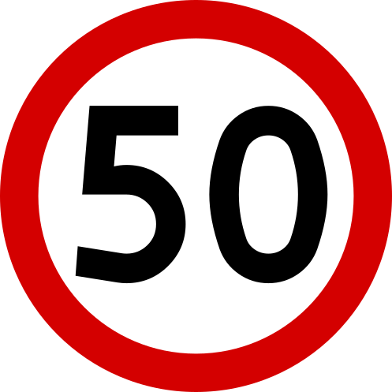
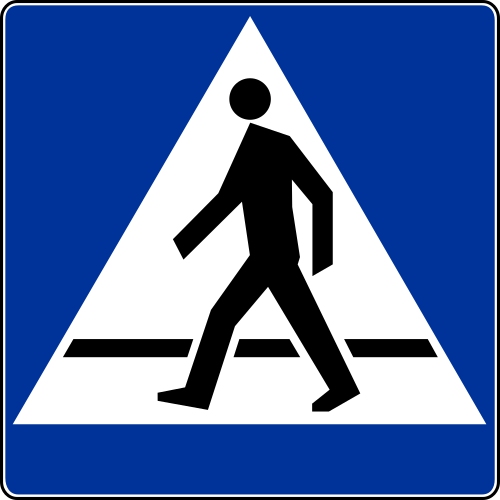
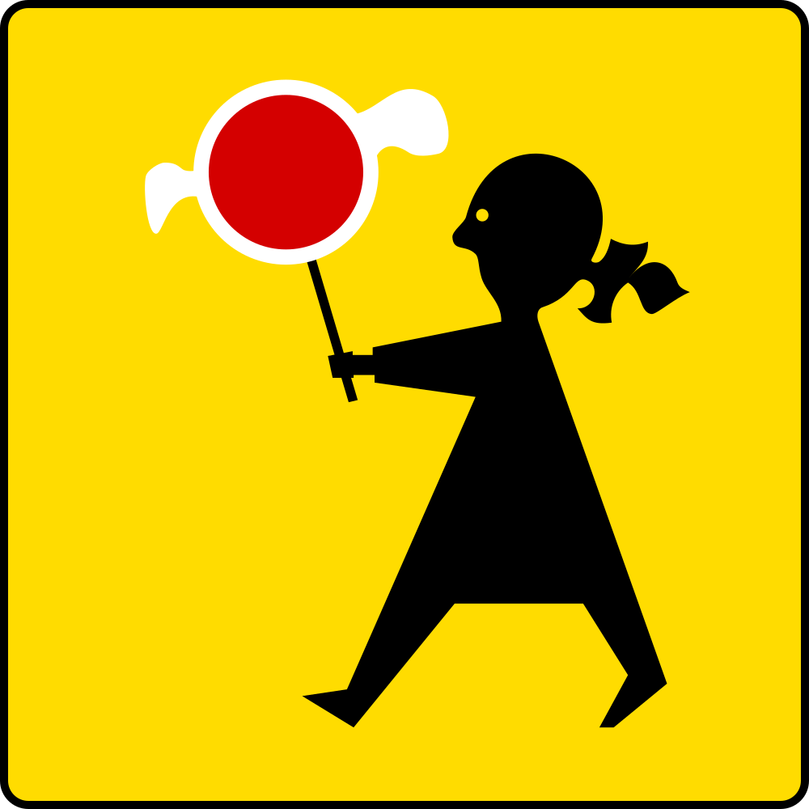
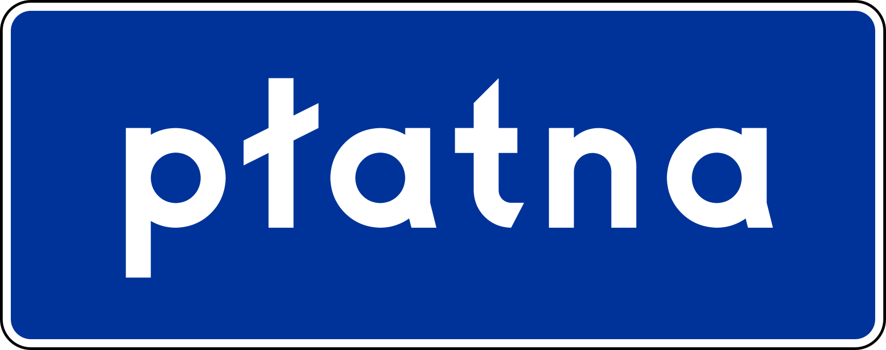
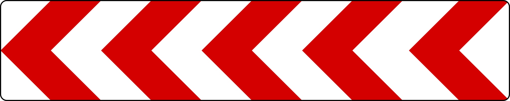
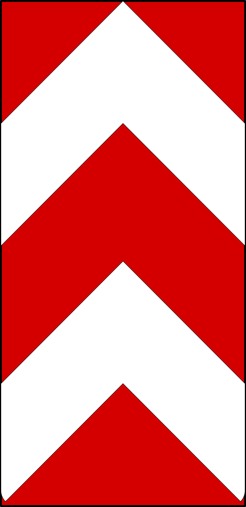
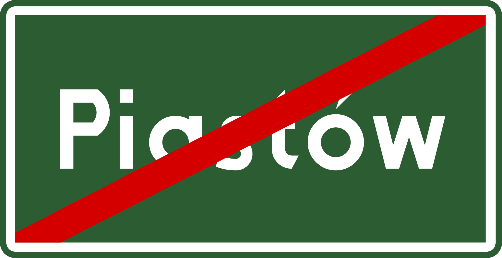
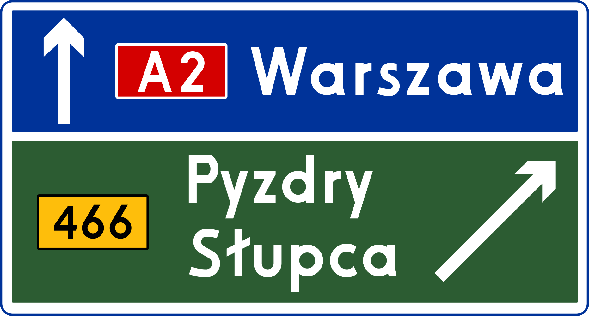
オレンジ色の警告看板があり外枠の赤線がとても細い。上の段はポーランド・下の段はギリシャ。
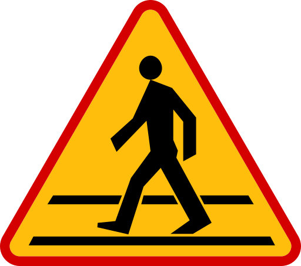
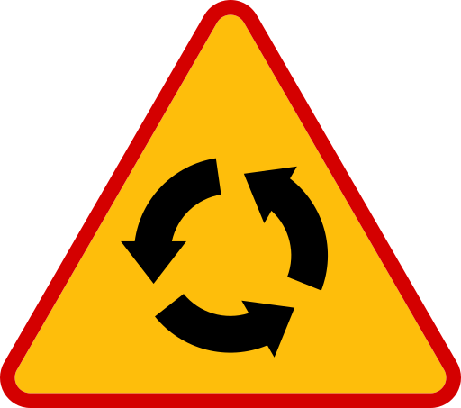
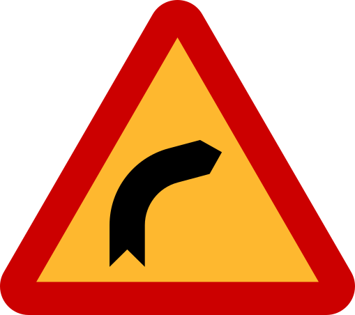
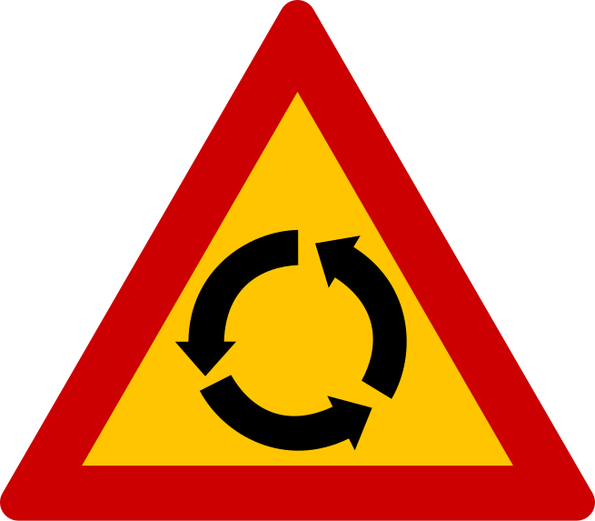
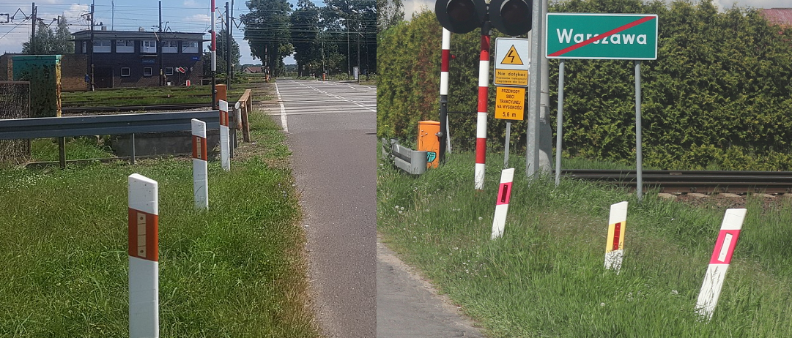
「Ł・ł」の文字がある。道路標識用にデザインされた専用のフォントを利用していて、ポーランドだけでしかこのフォントは使用されていない。「t」の形が特徴的(参考文献 Polish road signs typeface)。フォント名はDrogowskaz。
mnoprstuwyzźż


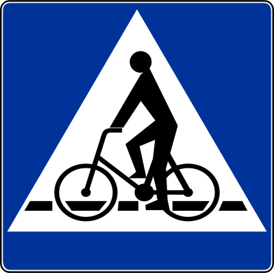
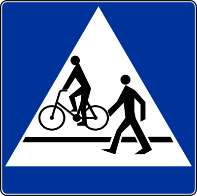
左がポーランド、右がルーマニアのガードレール。ポーランドのガードレールは角ばっているがルーマニアは角ばっていないことが多い。ポーランドのような細い角ばった溝で赤い反射板のガードレールはクロアチア・セルビア・モンテネグロ・トルコで使われることがある(参考文献 European Guardrails)。

教会、マップ上に表示されるので位置を探す時に役立つ時がある。
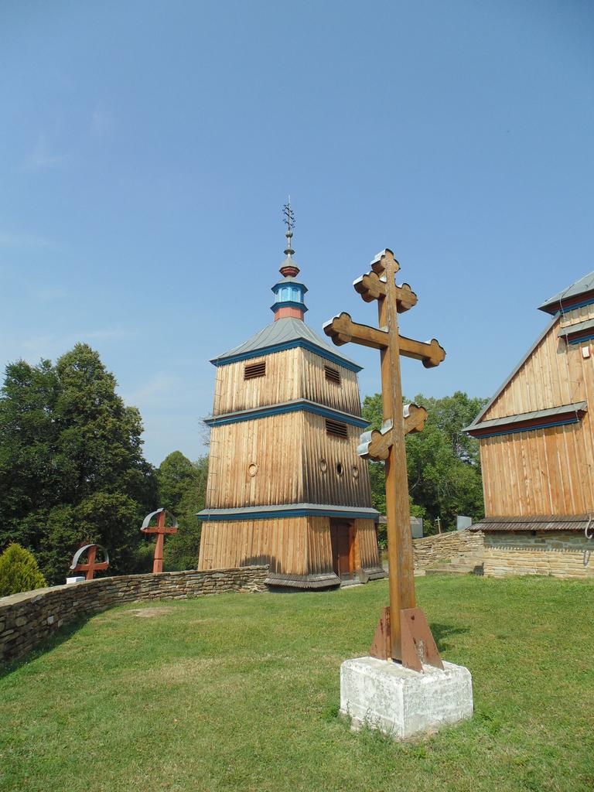
POCZTA（ポスト、赤い）
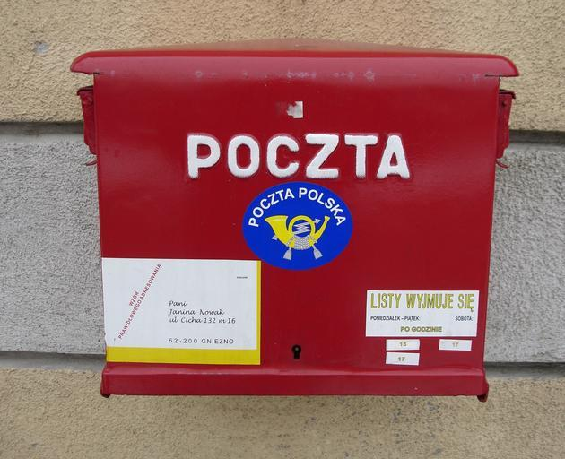
{{< amazoncard url=“https://amzn.to/4rGoFuD” title=“ポーランドの歴史を知るための56章【第2版】 (エリア・スタディーズ)” price=“¥2,200” tagline=“ポーランドの歴史を知るための簡便な1冊で、その執筆陣には今日第一線で活躍するわが国のポーランド史研究者が顔をそろえた。どの章、どのコラムからも読め、十分ポーランド史の概略を掴むことができる、待望の第2版。”
}}
州・地域の絞り込み
『~wo』『~no』は北、『~ów』『~ew』は中央から南より。ポーランドの歴史上のGreater Poland・Lesser Polandの境界と関連しているらしいが正確には不明(参考文献 ポーランドの歴史)(参考文献 Lesser Poland)。
CIty/town name endings in Poland
byu/Poiuy2010_2011 inMapPorn
22xがWarszawa付近。8を無視して数が大きいほど北西と覚えている。全体的に平坦な国で景色を見てもどのあたりか分からない気がするので、道路番号・地名・市外局番がわからなかったら、個人的にはとりあえず真ん中に行くことが多い。携帯に使われる番号も存在しているので先頭の数字だけで地域を決めないように注意(参考文献 Telephone numbers in Poland - Mobile codes)。

{kind=link}
「w」が英語での「in」の意味なのでwのあとの名前を地図で探してみる
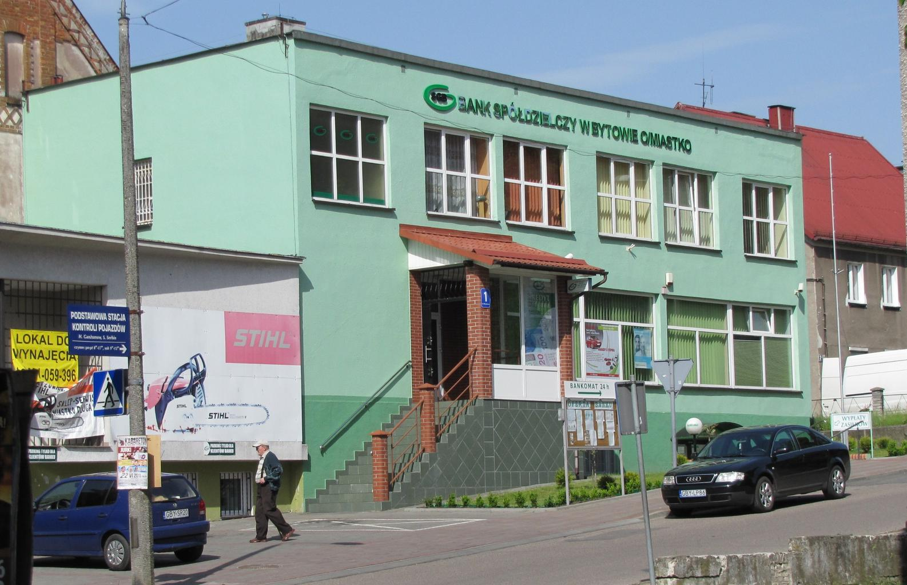